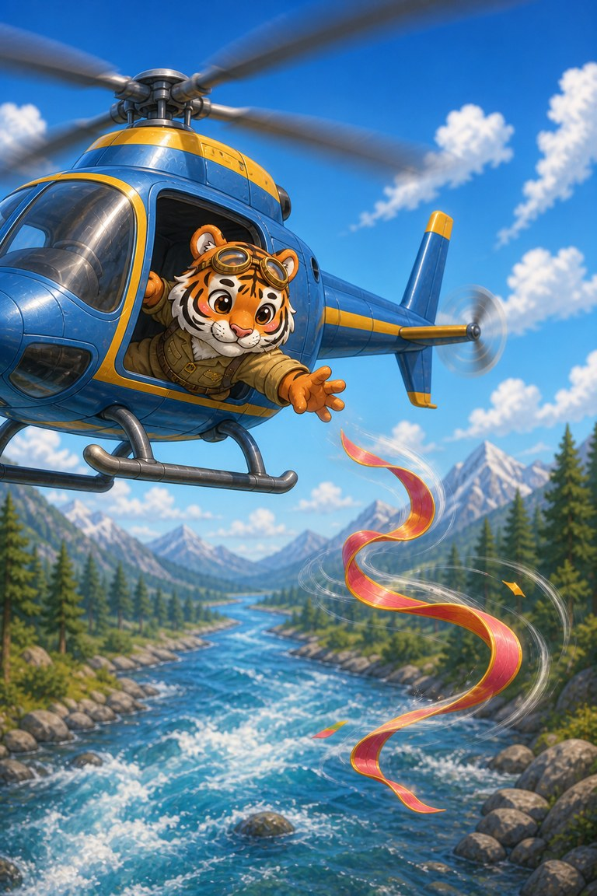
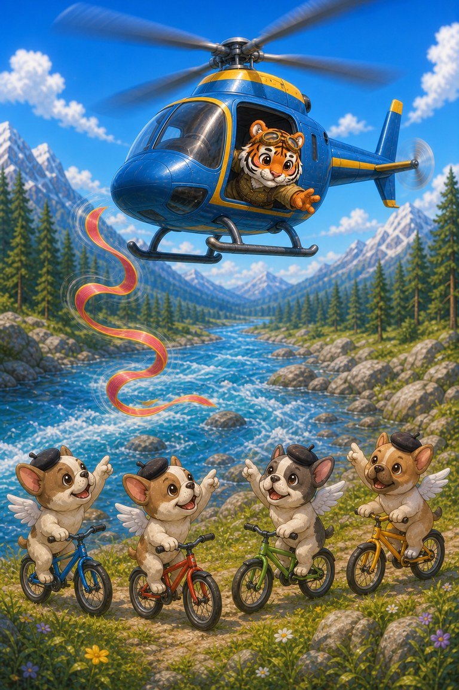

Page 1 of 4
Captain Beakon lifts the little red plane for the final air-show loop. The long red-and-gold ribbon behind it suddenly tears free.
A four-page air-show rescue about a lost ribbon and helpers in the sky and on the ground.
5 printed pages · 0.9 MB · A4 or US Letter. Download PDF · Open PDF to printOpens in a new tab. Use the PDF viewer's Print control. To use less ink, read online and choose only the questions on page 5 in Print.
Captain Beakon lifts the little red plane for the final air-show loop. The long red-and-gold ribbon behind it suddenly tears free.

Stripe-Scout sees the ribbon drifting toward the river. She lowers her helicopter, but the wind keeps pushing it away.

The Baby Bulldogs race their bikes along the bank, calling left and right. Their directions guide Stripe-Scout above the exact spot.
Stripe catches the ribbon, and Beakon flies one slower loop so every helper can wave. The brightest colour in the show belongs to the whole team.
The Bulldogs guided Stripe-Scout from below.
So every helper could share the applause.
SnackPack Sentences & Spelling has many more short reads like this one, plus the Reading Trail, word packs and literacy games.
Related read-together bookBaby Bulldogs at the Playground
Explore another book · read togetherSub‑Zero and the Snowflake Post
Know a family or class who would enjoy it?